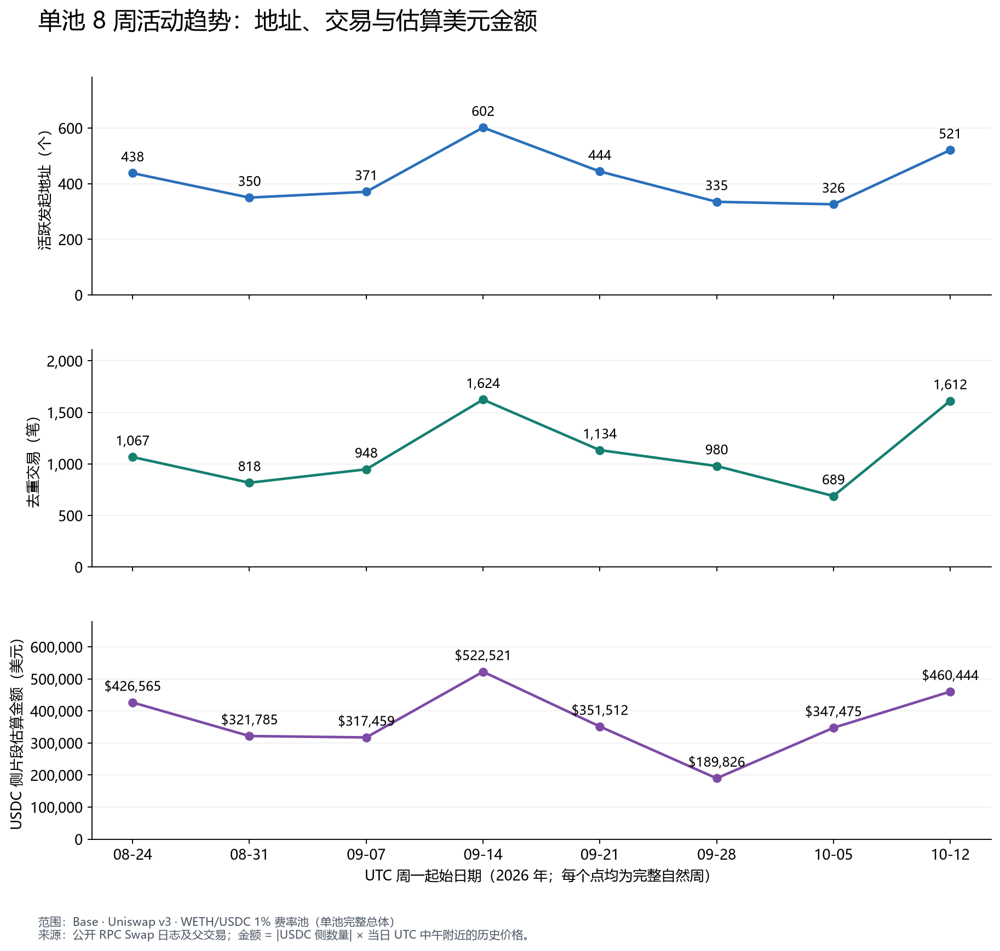
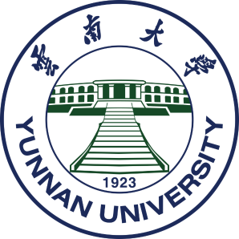
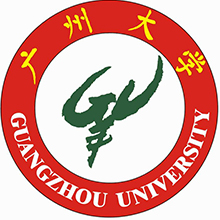

整理降水稳定同位素、采样时间与气象资料，通过同一记录上的模型比较与不确定性分析，研究天气背景与同位素变化的关系。目前关注采样前天气能否在采样期间天气之外提供额外信息。
研究方向与方法 ↗降水观测天气背景模型比较
地学研究 · 定量方法 · 实际问题
资源与环境硕士研究生
研究与应用兴趣
研究经历
围绕降水稳定同位素和海洋食物网开展研究，重视观测与模型之间的联系，以及分析结果能支持怎样的解释。
整理降水稳定同位素、采样时间与气象资料，通过同一记录上的模型比较与不确定性分析，研究天气背景与同位素变化的关系。目前关注采样前天气能否在采样期间天气之外提供额外信息。
研究方向与方法 ↗使用 Ecopath / Ecosim 研究功能群关系、营养通量与生态系统动态。工作涉及跨模型功能群映射、通量比较、敏感性分析，以及渔业和环境变化背景下的动态模拟。
研究方向与方法 ↗应用项目
两项已公开的分析案例，包含报告、数据、代码与交互工具。完整内容保留在案例页，首页展示问题与产出。


教育背景

资源与环境 · 硕士研究生在读

统计学 · 理学学士